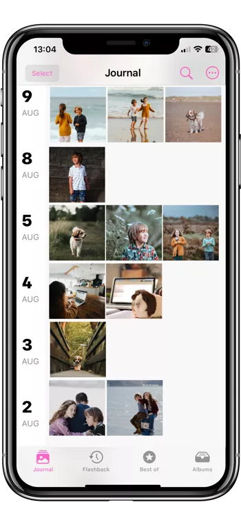
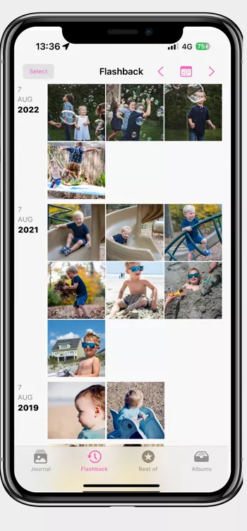

Keepers is a Family Photo Organiser for your iPhone.
Overwhelmed by the sheer volume of photos on your iPhone? Keepers is a simple, yet powerful app that uses AI technology to declutters your photos, find lost memories and put you in control.
Overwhelmed by the sheer volume of photos on your iPhone? Keepers is a simple, yet powerful app that uses AI technology to declutters your photos, find lost memories and put you in control.
Are your photos out of control?

Who can resist, your kids are so cute. You've captured every moment on your phone. Then you sorted, shared and maybe even printed them.

But time passes, now you have tens of thousands of pictures in your unorganised photo pile. You began the endless scrolling, knowing that some great moments are lost forever.

So we've designed an app that combats the stress. By organising your photos, and helping you create wonderful collections, we'll give you these precious memories back.
Let our AI do the chores
In a few simple steps, go from overwhelmed to overjoyed!

Focus on what matters
Keepers skips over screenshots, memes and identifies similar shots. Visually similar photos are grouped together into moments.

Neatly organised
It's the Marie Kondo method for your photos. Except, you don't have to do the hard work. With the calendar view, you can easily find events, relive past memories and spark joy with your photos again.

The days are long but the years are short
Keepers' Flashback feature takes you on a daily trip down memory lane to rediscover life’s lost big and small moments.

Enjoy. Easy as!
The app comes with a powerful & easy to use AI search engine. With all your photos organised, it only takes seconds to find memories, make albums and share photos.

Are my photos safe?
Your photos always stay on your phone. We won’t interfere with any backups or iCloud storage you already use.
Do you delete photos?
We never delete a picture. We only ever filter them out.
Can I link my partner's phone pictures?
We recognise that it’s crucial for many parents to keep their family photos in sync. And even better, automatically. We are working on this and hope to launch it on both Apple & Android platforms in the next major release.
Can I block someone from appearing?
Yes, this feature will be included in a future release.
How much does the app cost?
We offer a 14 day free trial. Keepers' monthly subscription is just $4.99 & our annual subscription is only $49.99
What happens if I stop subscribing?
You can keep the app on your phone, and your folder structure will stay the same. We won’t update your albums when new photos get uploaded. You can resubscribe at any time.
I have downloaded Keepers and a technical question. How do I get in contact with you?
Please reach us at info@keepers.com. We'd love to help.
I love using Keepers and would love to review it?
We would love if you left us a review on the App Store
The Keepers promise

The team of parents creating Keepers know how precious your photos are. We are firmly committed to keeping your families' memories safe & secure.

We want Keepers to be the guardian of your family memories. We charge a subscription fee to earn our living. We won’t sell your data or your privacy.

We are becoming a Benefit corporation. It is a for profit company with a legal mandate to make decisions that benefit society as well as the shareholders.

We want our children and their children to enjoy this beautiful blue planet. We commit to the 1% for the planet scheme and hope to go further when we can.
So does it work?

Laura, TV producer
“ People expect a TV producer to have their photos organised. I didn't! My family photos were mixed up with thousands of work photos and screenshots. But this app did all of the work. No more scrolling for me!”

Tash, Dentist
“ I love the Flaskback feature. Seeing images from ages ago brought such a smile to my face. I won't worry about losing photos in the future. ”

Jay, SAHM
“ I don't use many apps, and a friend convinced me to help test Keepers. It was so much better than I expected. I even made a photo book during my kid's gym class. I love how fast & easy it is.”
We'd love you to join the Keepers Family, download the app today!

For feedback, issues & requests please contact us.